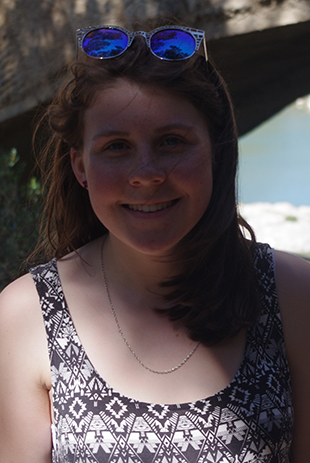

Vedoucí
Lukmen
- Lukáš Bezděk (*1972)
- Hlavní vedoucí ZDT, hlavní vedoucí LDT 1995 - 2009, jednatel KOLTu
- Zaměstnání: informatik
Jakožto kluk jsem absolvoval nepočítaně táborů v roli dítěte; pamatuji třeba spartakiádní léto se dvěma 3-týdenními tábory za sebou… A asi právě štěstí na zajímavé a pestré tábory a fajn lidi okolo ve mně zanechalo až do dospělosti silný vztah k táboření, pobytu v přírodě, životu pod stanem, slunci, vodě a ohni. A když se k tomu později přidala trocha organizátorské posedlosti a nadšení pro hry a dobrodružství, nemohlo to dopadnout jinak – táborům a akcím pro děti jsem propadl a záhy se ujal role vedoucího, pořadatele a organizátora.
Od roku 1991 se motám nepřetržitě kolem letních táborů - zprvu jako praktikant a oddílový vedoucí, od roku 1995 coby hlavas. V téhle roli jsem „odvedl“ celkem 15 letních táborů a i když jsem v roce 2010 předal vedení 1B party Khainetherovi, od táborů jsem nadobro nezmizel. Počínaje rokem 97 (shodou okolností rok stěhování LDT do Čeřína) totiž kromě letních pořádá KOLT také zimní tábory na horách - no a jarní turnusy 1B party vede odpočátku dodnes zase Lukmen. Dá se tedy asi říci, že jsem svým způsobem inventářem prvoběžců a KOLTu J Na mém příkladu je vidět, že i když člověk zestárne a jeho role se s časem a věkem trochu změní, odejít úplně prostě není možné. Tábor u potoka, nadšení dětí, táboráky, herní večery, bojovky a hlavně všichni super lidi kolem by mi totiž hrozně moc chyběli…
Khainether
- Martin Gryc (*1976)
- Hlavní vedoucí
- Zaměstnání: rozúčtování tepla a vody
Jezdit na tábory jsem začal v polovině osmdesátých let v rámci turistického oddílu, který se v devadesátých letech proměnil ve skautský. Když jsem odrostl dětským botkám, podílel jsem se několik let na vedení tohoto oddílu, než v roce 1998 zanikl. Po čase mi začaly tábory chybět, až jsem se v r. 2002 dostal přes kolegu v práci ke KOLTu. Na KOLTích táborech jsem působil do r. 2009 jako oddílový vedoucí a několik let také jako zástupce hlavního vedoucího. Na podzim 2009 jsem se stal hlavním vedoucím 1. běhu. V letech 2001-2010 jsem pracoval jako učitel, nyní působím v energetické firmě.
Bozďa
- Jan Bozděch (*1983)
- Hospodář a zásobovač
- Zaměstnání: systémový specialista
Na tábory jezdím již od svých šesti let. Společně s Vikim, Fifíkem, Dádím a Vlastou jsme již od Trpišovic bojovali o každý diplom a společně s dalšími vrstevníky a skvělými vedoucími prožívali supr prázdniny. Pravidelná účast a dobrá parta zapříčinili, že jsem se také i já stal součástí organizačního týmu. Začínal jsem jako většina nováčků dospělácké party funkcí pomocníka vedoucího oddílu – praktikanta. Po pár letech u vedení dětí jsem se ovšem dostal do role zásobovače a hospodáře 1. běhu. Tuto funkci vykonávám od roku 2005. Jinak se také rád účastním našeho zimního lyžarského tábora. Mám rád legraci, zábavu, upřímnost, férovost a pracovitost. Naopak nemusím afekt, dotěrnost, vulgárnost a lajdáctví.
Ejka

- Věra Bezděková (*1970)
- Kuchařka
- Zaměstnání: zdravotní sestra
Na tábory jsem jezdila už jako malý špunt. Kolektivní dovádění v přírodě mě dostalo natolik, že jsem posléze „povýšila“ do funkce vedoucí. Když o pár let později moje vlastní potomstvo posílilo řady malých raubířů, bylo třeba mých rukou v kuchyni. Všichni byli patrně spokojeni, protože v kuchyni jsem dodnes a ještě dlouho po návratu z tábora vařím i doma v tom největším hrnci. Aby má tělesná schránka nestrádala a já udržela tempo s mým neustále nápady vymýšlejícím manželem Lukášem, utužuji se sportovními aktivitami jako je volejbal, aerobik, kola a v neposlední řadě jsem holka od vody a tak v létě neodolám vodáckému vábení a žádná voda není přede mnou v bezpečí. V civilním životě jsem ale samozřejmě maminka dcera Terezky a syna Tomáška a milující manželka… no v podstatě anděl v bílém, protože pracuji jako zdravotní sestra na soukromé ortopedii.
Evička
- Eva Kleinová (*1979)
- Paní kuchařka
- Zaměstnání: kadeřnice
K partě Kolťáků mě již před lety dovedl můj partner Páblo, a i když jsem jako dítě k táboření vztah neměla, přirostli mi k srdci a dostala jsem se do táborové kuchyně, kde krmím hladové krky a že jsou po vypečených hrách někdy pěkně hladové ;). Mnoho Kolťáků patří nyní k mým nejlepším přátelům a vzhledem k mému povolání také polovinu z nich stříhám :D. Z táborové kuchyně jsem se na čas vytratila, neboť jsem měla dvojité mateřské povinnosti, ale do táborové kuchyně jsem se opět po čase vrátila. A to nejprve na zimní tábory, kde to je přeci jenom s malými dětmi snazší, a posléze rovněž do kuchyně Čeřínské. Vzhledem k tomu, že mám 2 malé dcery, ve volném čase se věnuji především jim a svému partnerovi.
Páblo
- Pavel Znamenáček (*1977)
- Pomocník v kuchyni
- Zaměstnání: kuchař
Tahle parta lidí ke mně patří snad odjakživa a mnohé současné vedoucí (ať již aktivní nebo ty co se kolem party točí), pamatuji jako táborové děti :). Na tábor jsem jezdil už do Trpišovic dvakrát (1995 a 1996) a pak na prvním Čeřín 1997. Teď již jezdím spíše jako podpora mé partnerce Evě, která po část tábora střeží táborovou kuchyň a rovněž pomáhá s kdejakou taškařicí zbytku party. V kuchyni se rovněž pohybuji ve svém pracovním životě, kdy se starám, aby lidstvo mělo co do úst, a ve volném čase se především věnuji mé rodině, ale také rád sportuji a sport sleduji a fandím SEŠÍVANÝM Z EDENU :-))). Ať žije SLÁVIE :-)))
Vláďa
- Vlastimil Novotný (*1983)
- Oddílový vedoucí
- Zaměstnání: servisní technik mycích systémů
Na tábory jsem začal jezdit v roce 1991 do Trpišovic, odkud mám spousty krásných vzpomínek společně s částí současné vedoucovské party. Od roku 1997 jezdím do Čeřína. Později jsem se i já přidal mezi tvůrce letní zábavy pro děti v krásném šumavském prostředí. Jezdím i na zimní tábory, které pořádáme v Krkonoších. Pracuji u německé firmy vyrábějící mycí systémy pro gastronomické provozy. Mezi mé záliby patří sporty (fotbal, florbal, snb. ..)
Helča

- Helča Chramostová (*1980)
- Zdravotník
- Zaměstnání: fakturace a distribuce cenin
Jako dítě jsem byla na táboře jen dvakrát. Bohužel jsem neměla štěstí na lidi. V obou případech jsem se setkala hlavně s těmi, kteří tam jezdili spíše z povinnosti a na jejich vztahu k programu a dětem to bylo dost znát. Na tábory jsem tak zanevřela…až do doby, kdy jsem poznala úžasnou partu lidí z Koltu. Jejich činorodost, smysl pro humor, chuť do práce a neutuchající nápady jsou vážně nakažlivé. Tady prostě platí: když dva dělají totéž, nikdy to není totéž. Takže mám teď opravdu co dohánět a moc se na to těším. :o) Jelikož už jsem maminka, v osobním životě se nenudím. Snažím se být hodně aktivní a činorodá, abych stíhala držet krok se synem, jeho nápady a zájmy. Jsem ráda v přírodě, hodně sportuju a život beru jako jednu velkou výzvu :o)
Marťa
- Martina Honců (*1983)
- Oddílová vedoucí
- Zaměstnání: vedoucí oddělení MMR
Podobně jako u mnohých mých kolegů, nedílnou součástí mého dětství byly letní a především zimní tábory, z kterých jsem si odvážela zážitky a vzpomínky na celý život. Tuhle partu KOLTích lidí znám už nějaký pátek a pěkně se mi vryla pod kůži. Když mi parta nabídla účast nejprve na zimním, a posléze i na letním táboře, neváhala jsem a řekla ano. Je skvělé účastnit se toho, co jsem měla v dětství velmi ráda, a to se skvělou partou lidí, připravovat pro děti zážitky, které by jistě v městě nezažily… :)! V reálném světě pracuji v oblasti fondů EU, kde vedu tým lidí, kteří na jedné straně monitorují a reportují, co se za finanční prostředky EU daří v ČR realizovat a rovněž organizují jednání různých typů. Organizační zajištění různých akce a vedení lidí je tedy mým denním chlebem a musím říct, že s dětmi je to v mnohém snadnější než s dospělými ;)! Ve volném čase dále ráda sportuji, vyrážím do přírody, cestuji, odpočívám ;)
Brácha

- Jan Honců (*1987)
- Oddílový vedoucí
- Zaměstnání: Tender manažer
Na tábory, letní i zimní, jsem jezdil snad od té doby, co jsem začal chodit, až do svých šestnácti let. Pak se tábory na dlouhých 10 let vytratily z mého života a ustoupily studiu a jiným kratochvílím. Zpátky do kolotoče her, nepořádku ve stanech, pohybu v přírodě, skotačení u vody, uzlování a řešení šifer jsem se dostal až v roce 2014, kdy jsem navštívil KOLTí partu v Čeřínském údolí… navštívil a už jsem zůstal jako oddílový vedoucí. Mám rád sport (volejbal, lyže, běh, …) a cestování, rád se pohybuji v přírodě a hraji na kytaru. V zimě se každoročně pokouším předat studentům jednoho pražského gymnázia své zkušenosti jako instruktor lyžování. Když zrovna netrávím čas v šumavských hvozdech nebo na krkonošských pláních, tak pracuji jako tender manažer ve společnosti zabývající se úpravou vody.
A proč Brácha? To mě takhle jednou Marťa přivedla do KOLTí party a řekla: „Tohle je brácha.“ :)
Krista
- Kristýna Chmelíková (*1988)
- Oddílová vedoucí
- Zaměstnání: Technolog
Můj první a jediný tábor, na který jsem kdy jela, byl právě tento: 1. běh tábora v Čeříně. K busu mne rodiče společně s bráchou odvedli, když mi bylo 11let. Nikoho krom bráchy, jsem neznala. Děsně jsme se bála: můj první tábor, 3 týdny kdesi v lesích, neznámí lidé, … Cítila jsem to jako děsnou zradu. Tak jako tatínek z pohádky o Perníkové chaloupce odvedl Jeníčka s Mařenkou do lesa, tak nás rodiče odvedli k autobusu, který jede do lesa.
Jenže pak jsem dosedla na sedačku autobusu, vedle holky podobného věku jako já a mé obavy se rozplynuly. Ihned jsem zapomněla na tu velkou křivdu a parádní dobrodružství začalo. Tři týdny utekly jako voda, náš oddíl byla skvělá partička, byla to moje nová rodina.
Avšak zase tu byl ten autobus a zase nás vezl, tentokrát domů. Rodiče si pro nás přišli, ale já jsem k nim nechtěla, měla jsem přece novou rodinu, tu táborovou, moc jsem to oplakala, celý den jsem s nikým nemluvila. Byla to doba, kdy éra mobilů a sociálních sítí byla ještě na houbách a já musela čekat celý dlouhý rok a doufat, že se zas se všemi uvidím v Čeříně. A bylo to tak! Jezdila jsem pak každý rok až do svých patnácti.
A pak, po 3letech, díky té holce z autobusu, díky Lú, jsem se zase vrátila do Čeřína, jako vedoucí na 3. běh. I když mne láká plno jiných aktivit, které mne rozptylují od tábora (dříve atletika, studium ČVUT, Erasmus, akce s kamarády; nyní cestování, práce a možnosti dovolené), bez Čeřína to nejde, Čeřínská louka i Čeřínský lid, to je návyková záležitost! A tak tu jsem zpět. Zpátky ke kořenům: jsem vedoucí z 1. běhu :).
Johnny

- Jiří Polák (*1991)
- Pomocník v kuchyni
- Zaměstnání: profesionální řidič
Do Čeřína jsem začal jezdit a v pozdějším dětském věku, ale i tak jsem si táborový duch, okolí i lidi kolem zamiloval. Čeřín pro mě znbamená dokonalý odpočinek od reality a starostí všedních dnů. Mým zájmům vévodí volejbal a hra na kytaru, která k táborovému ohni rozhodně patří. Orosená louka, šumění lesa, bublání potoka a obloha plná hvězd...bez toho už si to pravé léto ani nedovedu představit.
Klárka a Terka
- Klára a Tereza Markovi (*1997)
- Praktikantky
- Zaměstnání: studentky
Hlavní je, že máme rady přírodu a kvalitní společnost v ní. Ať už se jedná o naše kamarády všeho věku, naše rodiče nebo kohokoli jiného. Proto kombinace letního a zimního tábora je pro nás dokonalá. Na KOLTÍ tabory nejezdíme zase tak dlouho, ale i za tu dobu jsme zde poznaly skvělé lidi. Máme rády kolektivní sporty, jako florbal, volejbal nebo tenis. Společně jsme skvělá navzájem se doplňující dvojka. Jsme přátelské, veselé a pro každou zábavu. Jako děti už jezdit nemůžeme, tak jsme se rozhodly jezdit jako praktikantky, doplnit partu vedoucích a dále se účastnit těchto skvělých táborů.
Dan
- Dan (*1994)
- Praktikant
- Zaměstnání: student
Říkají mi Dan, ačkoli je na táboře občas nejisté, že to říkají zrovna mně. Mou hlavní dobrovolnou činností na táboře je starání se o to, aby si malé děti bez dozoru nehrály s ostrými předměty. To nemám rád. Na tábor jezdím už polovinu svého života, a zatím se neobjevilo nic, za co bych své prádzniny chtěl vyměnit.
JT
- JT (*1997)
- Praktikant
- Zaměstnání: student
Na tábory jezdím od roku 2006, ale do Čeřínského údolí jsem se poprvé podíval až v roce 2008. Když jsem jel do Čeřína poprvé, měl jsem velmi smíšené pocity. Přeci jen jsem nikoho neznal, ale už během prvního dne jsem se zařadil do řady KOLTích táborníků. Za celých 8 let, co sem jezdím, mi tábor neuvěřitelně přirostl k srdci a prázdniny bez těchto úžasných 2 týdnů si nedokážu vůbec představit.
Evča

- Evca Svobodová (*1995)
- Oddílová vedoucí
- Zaměstnání: zdravotní sestra
...
Anička
- Anna Klapková (*1995)
- Oddílová vedoucí
- Zaměstnání: asistentka učitele
...

- Naděžda Andrýsová (*1997)
- Praktikantka
- Zaměstnání: studentka VŠ
...
Terka a Tom

- Tereza (*1999) A Tom (*2001) Bezděkovi
- Praktikanti
- Zaměstnání: studenti
...
Ondra
- Ondřej Fraitag (*2000)
- Praktikant
- Zaměstnání: student
Na tábory jsem začal jezdit už jako malý kluk. Když jsem na táboře byl poprvé, mé pocity byly smíšené, skoro nikoho jsem neznal a bylo to poprvé, co jsem byl na delší dobu sám bez rodičů. Ovšem později jsem si táboření a všechno dění okolo toho zamiloval a dva týdny v Čeříně se pro mě staly nenahraditelnou částí prázdnin. Myslím si, že o prázdninách je fajn strávit nějaký čas v přírodě mimo město :)
Ajda
- Adina Marková (*2000)
- Praktikantka
- Zaměstnání: studentka
Na táboře jsem byla poprvé už v pěti letech, a i když si své tábornické začátky moc nepamatuji, určitě se mi tam od začátku líbilo, protože jsem se pak každý rok až do nejvyššího možného věku vracela. Jsem společenská a sportovně založená, nekoušu. Lebedím si v gurmánském táborovém jídle a kvalitní zábavě poskytnuté naším přátelským kolektivem. A na závěr bych ráda připomněla, sportu zdar!
Majda

- Magdaléna Holmanová (*2001)
- Praktikantka
- Zaměstnání: studentka
Na první tábor do Čeřína jsem jela v roce 2008. I když to tenkrát znamenalo odjet na tři týdny do neznáma mezi lidi, které jsem (skoro) vůbec neznala, netrvalo dlouho, než mi došlo, že to bylo jedno z nejlepších rozhodnutí, které jsem dosud udělala. Od té doby jsem se tam každý rok po deset let vracela, než jsem zestárla natolik, že jediná možnost, jak o tuhle část mého života nepřijít, byla přidat se k partě vedoucích, která mě k mému štěstí vzala mezi sebe. Mám ráda sport, cestování, hudbu, zábavu a dobrou společnost, což podle mě KOLT dokonale spojuje.
Viola

- Viola Dvorníková (*2001)
- Praktikantka
- Zaměstnání: studentka
Na KOLT jezdím už od roku 2008, kdy jsem se poprvé ocitla v partě se 3. během. Další rok jsem vyzkoušela běh 1. a u něj jsem zůstala až dodnes. Bez těch dvou týdnů plných čerstvého vzduchu, táboráků, skvělých lidí a táborového ducha si už nedokážu představit své léto. Jsem milovník přírody, hudby, umění a rukodělných kreativních technik. Ráda se věnuji činnostem s dětmi, jsem přátelská a ráda se seznamuji s novými lidmi.
Bára
- Barbora Nováková (*2001)
- Praktikantka
- Zaměstnání: studentka
...
Týna

- Kristýna Klimová (*2001)
- Praktikantka
- Zaměstnání: studentka
...